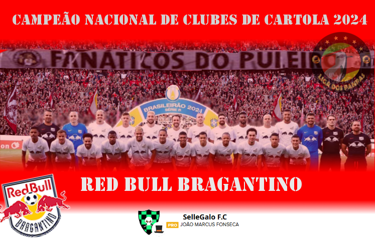

Campeonato de Cartola
A vitória no cartola é o sucesso do seu time!

Redação Cartola - 04/12/2024 - 17h38min 
Apesar da vitória do Palmeiras do "Alemão Colorado 75" contra o Fortaleza, professor "Sellegalo F.C", ao empatar com o Flamengo em 0x0, chegou ao 65 pontos, não podendo mais ser alcançado pelos adversários.
Com um dos contratos mais antigos dentre os técnicos de clubes de cartola, a parceria entre Bragantino e Sellegalo F.C voltou a dar frutos. Assumindo o clube de Bragança Paulista na já distante 19ª rodada da temporada 2023, logo após a conquista do Campeonato Mineiro com o América-MG. Naquela temporada apresentou boa campanha, com o Bragantino encerrando a temporada entre os oito melhor clubes da elite, garantindo com isso a participação na Copa Sulamericana, na qual o clube saiu campeão ao vencer o Libertad do "Tricolor Azul Branco e Preto", que jogava apenas por um empate.
No campeonato paulista, Sellegalo F.C. ficou com o vice-campeonato, atrás do Corinthians do "TimãoJP10".
Por ter obtido vaga para disputa da Copa Sulamericana, Bragantino iniciou a Copa do Brasil a partir da quinta fase, passando pelo Novorizontino e, depois, na sequência, eliminado pelo Vasco do "SELEBEST FC", clube até então rivalizava pela liderança do nacional.
Na primeira parte do campeonato, tudo parecia indicar que o Vasco, vice-campeão de 2023, levaria o título deste ano, já que foi, de longe, a equipe que mas tempo liderou o campeonato, sustentando a primeira colocação de forma ininterrupta da rodada 6 até a 24, somando ao todo 19 rodadas na liderança. No entanto, o crescimento do Bragantino, aliada à queda de aproveitamento do Vasco no returno, possibilitou ao Bragantino assumir a liderança na rodada 25, vindo a ser deposto na rodada 29 para na sequência recuperar a primeira colocação e nunca mais sair.
Treinador campeão faturou 420 reais e 300pts no ranking geral de treinadores. Já o clube obteve obteve acesso à disputa da Copa Libertadores de Clubes e ingesso na Copa do Brasil a partir das oitavas-de-finais.
Com o título, "Sellegalo F.C", do cartoleiro João Marcos da Fonseca, saltou da 17ª para 3ª colocação do ranking de treinadores, chegando à marca dos 500 pontos, fechando temporada como um dos melhores técnicos de todos os tempos.
Parabéns Sellegalo F.C. Abaixo, toda a campanha do campeão nacional de 2024.